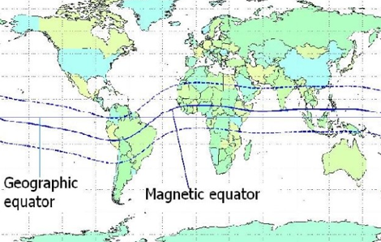

Hi Andy,
I give you my two cents and others may want to chip in too. The short answer is yes that it is possible. The long answer is TEP is F2 layer propagation that is fueled by an evening upwelling phenonium at the
geomagnetic equator. Unfortunately for us at the west coast is drops down. Making is a little harder to get to Pitcairn then say ZL or the EU to South Africa TEP path. Because the MUF is so high we have been experiencing some great TEP as we approach the equinox.
It should still be improving. Keep an eye out for VP6MW she lives on Pitcairn and is on 6 meters sometimes but is sporadic in her operating. Mostly I see her work Texas and Mexico. I need Pitcairn too!! So, shout it out if you spot her. GL Matt K6EME

From: Chat <chat-bounces@ncdxc.org>
On Behalf Of Andrew Calman via Chat
Sent: Friday, October 4, 2024 1:33 PM
To: Chat NCDXC <chat@ncdxc.org>
Subject: [NCDXC Chat] Transequatorial 6m NIGHTTIME prop in Africa
PSK Reporter and DXMaps are showing some unusual nighttime transequatorial 6m propagation in Africa:

Being a total VHF newb, I defer to the propagation gurus in the club as to why this might be occurring.
I wonder if we might be able to work Pitcairn or Easter Island on 6m tonight?
Interesting times!
73,
Andy K6ZP
Montara,CA